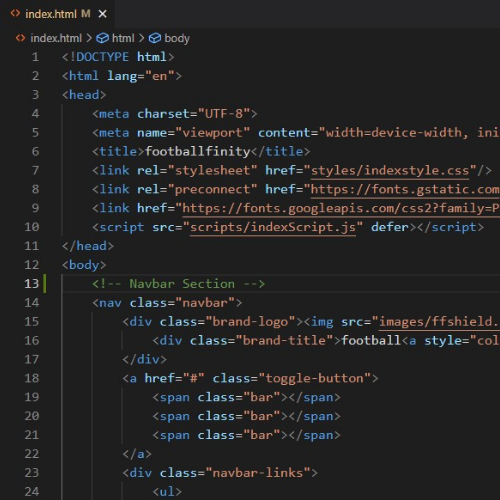
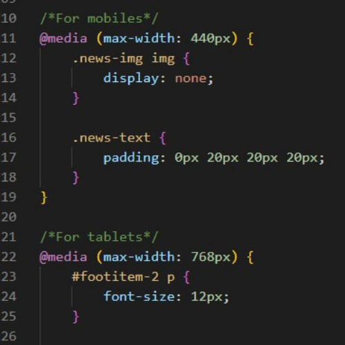
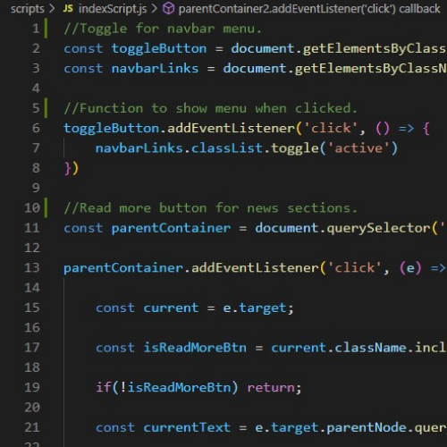

footballfinity.com
Footballfinity was a passion project that enabled me to further develop my skills in HTML, CSS and JavaScript. It was designed to deliver the latest news and transfer rumours for football fans in a website that was aesthetically uncluttered and easy on the eyes.
By making the website responsive, I ensured users would have a pleasant experience, whether on mobile, tablet or pc.
HTML and CSS provided the structure and style of the site, while I utilized JavaScript to provide some animation and give users a more dynamic, interactive experience.

HTML
The website uses a number of block level elements to define areas such as the header, navigation menu and main content.
It is also important to have consistent navigation on your website in order to avoid confusing or frustrating users. Therefore I designed the site to have two separate navigation sections; making it better for accessibility, as screen readers can read the two features better if they are separate.
There were times when grouping sets of elements together to affect them all as a single entity with some CSS or JavaScript was appropriate and using non-semantic elements such as "div" and "span" was an effective solution.
Comments were also used to assist with debugging and to improve readability for anyone else who might examine the code.
The website uses a number of block level elements to define areas such as the header, navigation menu and main content.
It is also important to have consistent navigation on your website in order to avoid confusing or frustrating users. Therefore I designed the site to have two separate navigation sections; making it better for accessibility, as screen readers can read the two features better if they are separate.
There were times when grouping sets of elements together to affect them all as a single entity with some CSS or JavaScript was appropriate and using non-semantic elements such as "div" and "span" was an effective solution.
Comments were also used to assist with debugging and to improve readability for anyone else who might examine the code.
CSS
One of the most important aspects for any modern website is for it to be responsive or adaptive. Through use of the @media rule and properties such as max-width, I was able to adjust the design according to the user’s viewport size.
CSS also enabled the separation of presentation and content, including layout, colours, and fonts. This separation improves content accessibility and provides more flexibility and control in the specification of presentation characteristics.
Selectors were used to declare which part of the markup a style applies to by matching tags and attributes in the markup itself. Pseudo-classes were also used in order to permit formatting based on information that is not contained in the document tree. One example of a widely used pseudo-class is :hover.
One of the most important aspects for any modern website is for it to be responsive or adaptive. Through use of the @media rule and properties such as max-width, I was able to adjust the design according to the user’s viewport size.
CSS also enabled the separation of presentation and content, including layout, colours, and fonts. This separation improves content accessibility and provides more flexibility and control in the specification of presentation characteristics.
Selectors were used to declare which part of the markup a style applies to by matching tags and attributes in the markup itself. Pseudo-classes were also used in order to permit formatting based on information that is not contained in the document tree. One example of a widely used pseudo-class is :hover.


JavaScript
JavaScript was highly effective for the website. As a platform-independent, lightweight scripting language made for data handling at the browser, it enabled me to make the web pages dynamic.
Making use of the Document Object Model (DOM) and anonymous functions, I was able to add events to elements on the pages, such as showing the navbar menu when a user clicked on the relevant symbol.
JavaScript also allows the site to dynamically generate HTML content. For example it allows the addition of text, links and images after an event occurrence, such as the user clicking on a “Read More” button in the Featured News Section.
JavaScript was highly effective for the website. As a platform-independent, lightweight scripting language made for data handling at the browser, it enabled me to make the web pages dynamic.
Making use of the Document Object Model (DOM) and anonymous functions, I was able to add events to elements on the pages, such as showing the navbar menu when a user clicked on the relevant symbol.
JavaScript also allows the site to dynamically generate HTML content. For example it allows the addition of text, links and images after an event occurrence, such as the user clicking on a “Read More” button in the Featured News Section.